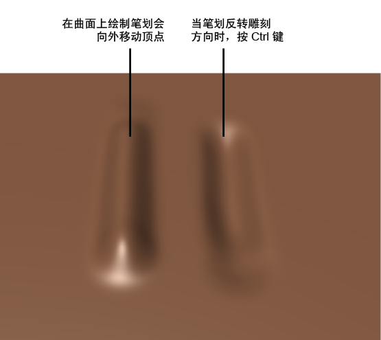

在 Maya 中雕刻就像加载模型、细分它以及使用雕刻工具在模型上绘制笔划那样容易。
- 在场景中，选择单个网格或多个网格。
如果在激活雕刻工具之前选择了多个网格，则可以在所有这些网格上雕刻。
提示： 如果没有要雕刻的任何网格，请在“内容浏览器”(Content Browser)中打开“雕刻基础网格”(Sculpting Base Meshes)（单击“雕刻”(Sculpting)工具架上的 ），然后从文件夹之一中选择网格。使用鼠标中键将网格从“内容浏览器”(Content Browser)拖动到场景中。
），然后从文件夹之一中选择网格。使用鼠标中键将网格从“内容浏览器”(Content Browser)拖动到场景中。
- 从“雕刻”(Sculpting)工具架或“网格工具 > 雕刻工具”(Mesh Tools > Sculpting Tools)菜单中选择工具。
Maya 将切换到对象模式。
- 在场景中，在网格上定位光标，在同一位置中单击几次，而不移动光标穿过模型的曲面。
网格上的顶点将在该区域中稍微向外移动。每次单击都会使顶点在工具光标内向上移动。顶点移动的距离取决于与“衰减”(Falloff)设置组合的“强度”(Strength)设置。“大小”(Size)设置由圆形工具光标（只要它在网格上就会显示）表示。平视显示仪消息显示在视口的底部，告知您所雕刻的网格的名称。
- 单击并拖动工具光标穿过网格的曲面。
网格上的顶点将沿着您拖动的路径稍微向外移动。此路径称为笔划。笔划看起来是连续的，但是实际上它由相互重叠的许多图章压痕组成。通过调整“间距”(Spacing)设置,可以调整图章重叠的程度。
注： 默认情况下，并非所有的雕刻工具都向外移动顶点。 - 若要反转任何雕刻工具的雕刻方向，请按住 Ctrl 键并拖动光标穿过模型的曲面。

- 若要创建更平滑的笔划，请在“工具设置”(Tool Settings)窗口中启用“稳定笔划”(Steady Stroke)。请参见生成平滑工具笔划。
注： 双击“雕刻”(Sculpting)工具架中的工具以打开“工具设置”(Tool Settings)窗口。
- （可选）使用 Ctrl + (1-9) 热键切换到其他雕刻工具。请参见雕刻工具热键。